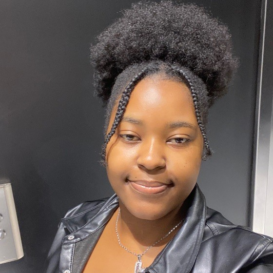

AAS/AIAA Astrodynamics Specialist Conference · July 2026
Josiane Uwumukiza
I am a recent Computer Science graduate of Wellesley College, with Computer Science Departmental Honors. Since January 2025 I have worked with MIT's Astrodynamics, Space Robotics, and Controls Laboratory (ARCLab) on computer vision for space applications, where I worked on satellite and asteroid 3D reconstruction and satellite 6-DoF monocular pose estimation. My senior honors thesis: Investigating 6-DoF Pose Estimation of Unknown Spacecraft via Generative 3D Reconstruction.
I also work with the Conformable Decoders group at the MIT Media Lab on wearable ultrasound tumor analysis with agentic LLM reasoning, and I spent summer 2025 as a software engineering intern with Microsoft AI.
Research interests Computer vision · 3D vision · Geometric deep learning · Multimodal systems · Autonomous navigation

Recent news
- DreamSat-Pose accepted at the AAS/AIAA Astrodynamics Specialist Conference: spacecraft pose estimation from single-view 3D reconstructions and learned 2D–3D feature matching.
- Graduated from Wellesley College with a BA in Computer Science and Departmental Honors.
- Joined the Conformable Decoders group at MIT Media Lab to work on wearable ultrasound tumor analysis and agentic AI.
- Co-first author on DreamSat-2.0 at the AAS/AIAA Astrodynamics Specialist Conference.
- Software engineering intern with Microsoft AI in Redmond, building LLM-powered ad-relevance evaluation for Microsoft Advertising.
- Poster at the ABCRMS national conference; awarded the NIH HuBMAP Underrepresented Student Internship Extension fellowship and a Wellesley Conference Travel Grant.
- Oral presentation at the HuBMAP 2024 symposium (video); selected for the D. E. Shaw Research Undergraduate & Master's Fellowship.
- Oral presentation at the 28th Ruhlman Conference, Wellesley College.
- 1st place at the Wellesley Blue Angels Pitch Competition.
- Poster at the Harvard National Collegiate Research Conference.
Publications
AAS/AIAA Astrodynamics Specialist Conference · August 2025
DreamSat-2.0: Towards a General Single-View Asteroid 3D Reconstruction
Research experience
MIT AeroAstro · ARCLab · Cambridge, MA · Jan 2025 – May 2026
Student Researcher, Computer Vision for Space
Led DreamSat-Pose, a multimodal 6-DoF spacecraft pose-estimation pipeline; co-first author of DreamSat-2.0.
MIT Media Lab · Conformable Decoders · Jan 2026 – May 2026
Student Researcher, Medical Imaging & Agentic AI
Wearable-ultrasound tumor analysis with UNet++ and LLM-verified decisions (93.6% accuracy, 100% malignant recall).
Microsoft AI · Redmond, WA · May 2025 – Aug 2025
Software Engineer Intern
LLM-powered ad-relevance evaluation over 1+ TB of data, deployed on Azure Data Factory (~85% recall, ~75% precision).
NIH Human BioMolecular Atlas Program · Gainesville, FL · May 2024 – Aug 2024
Computer Vision Intern
CycleGAN and Attention U-Net podocyte segmentation on histopathology whole-slide images (0.92 SSIM).
Wellesley College · Sep 2023 – May 2025
Computational Chemistry Research Student
GROMACS molecular-dynamics simulations of peptide truncations, analyzed in VMD and R.
The Jackson Laboratory for Genomic Medicine · Farmington, CT
Research Intern
Whole-genome sequencing analysis of 30 breast cancer cell lines in R, with wet-lab validation.
Teaching
- Teaching Assistant, Mobile App Development — Wellesley Computer Science. Supported 14 students building full-stack apps with React Native, Firebase and Expo; led weekly office hours.
Awards & fellowships
- NIH HuBMAP Underrepresented Student Internship Extension Program — selected through a competitive NIH review for a year-long extension; $11,000 fellowship to continue machine-learning research in computational pathology.
- Wellesley College Conference Travel Grant — competitive grant supporting the ABCRMS presentation.
- D. E. Shaw Research Undergraduate & Master's Fellowship — fully funded fellowship in computational biochemistry and scientific computing, New York.
- Wellesley Blue Angels Pitch Competition, 1st place — Wellesley's most competitive tech venture pitch competition, judged by alumni leaders in technology, entrepreneurship and venture capital.
Education
- 2022 – 2026Wellesley College — BA in Computer Science, Departmental Honors. Senior honors thesis on 6-DoF pose estimation of unknown spacecraft via generative 3D reconstruction. Coursework includes Artificial Intelligence, Probabilistic Foundations of Machine Learning, Theory of Computation, Foundations of Computer Systems.
- 2025 – 2026Massachusetts Institute of Technology — cross-registration: Cryptocurrency Design and Engineering, Computer Systems Security, Undergraduate Research in Aerospace Engineering (16.UR).
- Fall 2024Queen Mary University of London — semester abroad: Scientific Computing, Computability & Complexity and Algorithms, Semi-Structured Data Engineering.
Creative
Children's book · 1st place, Andika Rwanda National Writing Competition 2017/2018
Inyamanza n'Abana Bayo
Award-winning children's book written and published at age 14.
Also: Wellesley Computer Science Club · WC Blue Notes a cappella · Wellesley Africans Association · Harvard Women Founders Circle · Code2040 Fellow.